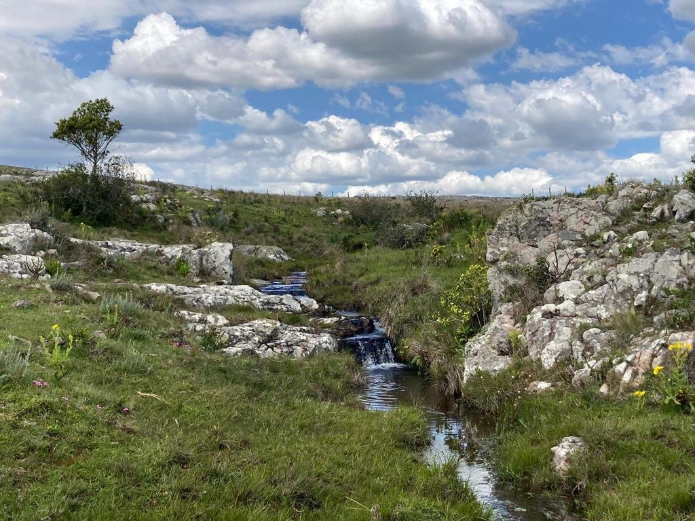
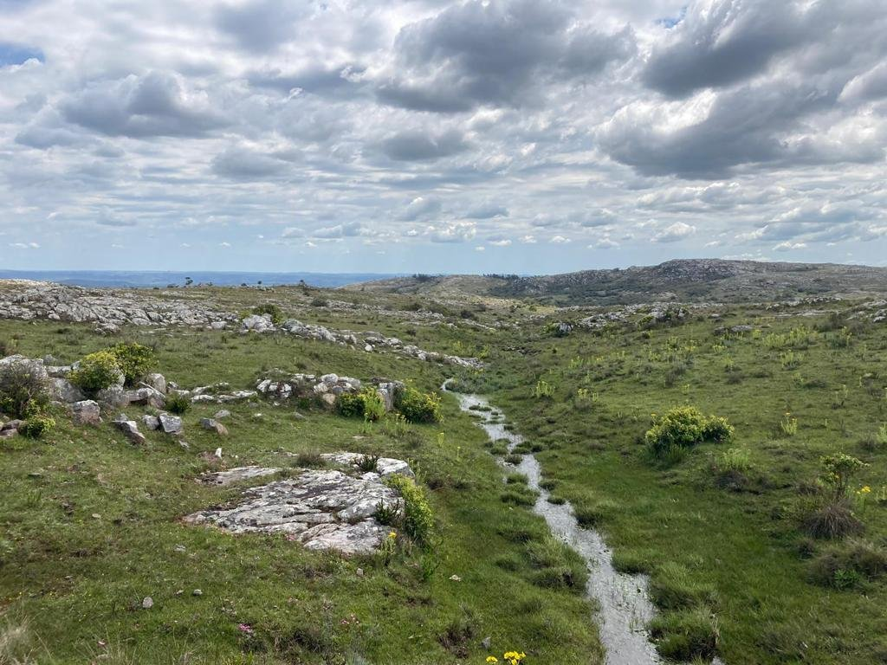
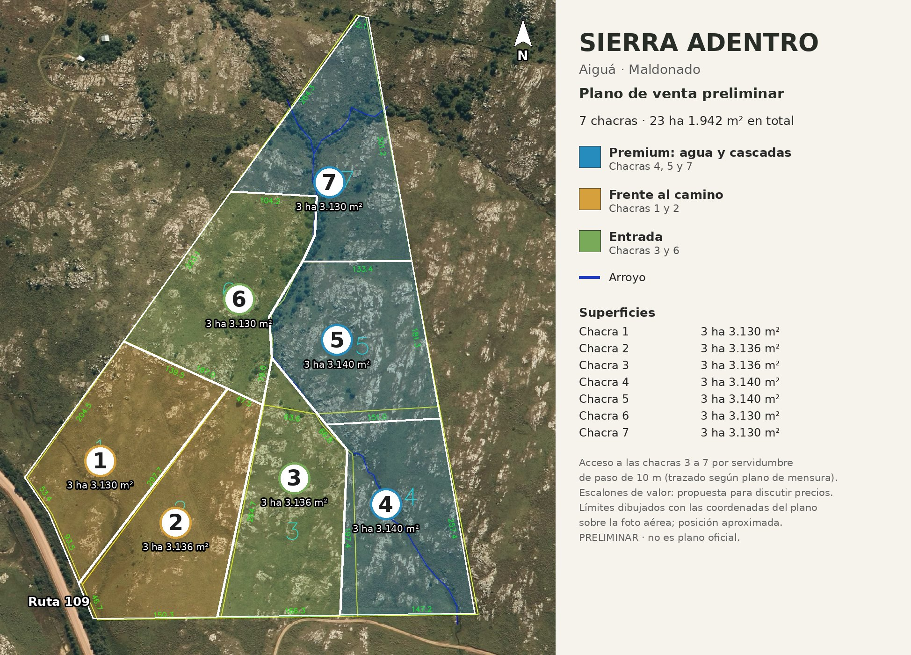
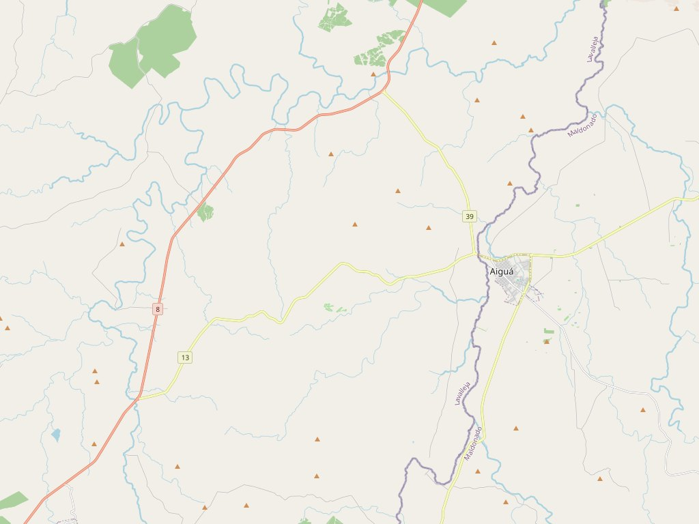

El manifiesto
Apertura de un nuevo territorio
Sierra Adentro nace en las sierras de Maldonado, en uno de los puntos más altos del Uruguay.
Un territorio de piedra, agua y horizonte. Un paisaje todavía intacto, donde el monte nativo, las formaciones rocosas y el silencio conservan una sensación cada vez más difícil de encontrar cerca del mundo contemporáneo.
Se llega por caminos panorámicos que lentamente separan el ruido de la ciudad y preparan la entrada a otra experiencia del tiempo y del espacio.
Aquí, el paisaje no es un fondo. Es el verdadero protagonista.
Sierra Adentro no nace como un fraccionamiento tradicional. Nace como la apertura de un nuevo territorio.
Así como hace casi un siglo los primeros desarrollos forestados de Punta del Este imaginaron una nueva forma de habitar la costa, hoy creemos que las sierras de Maldonado representan el comienzo de otra búsqueda.
Una búsqueda más silenciosa.
Más esencial.
Más conectada con la tierra, el cielo y el horizonte.
El verdadero lujo contemporáneo ya no es la saturación.
Es el espacio.
La privacidad.
La oscuridad nocturna.
El agua natural.
La posibilidad de respirar profundamente y recuperar una relación más humana con el paisaje.
Las chacras de Sierra Adentro fueron concebidas para preservar esa experiencia.
La baja densidad, las visuales largas, el relieve natural y la presencia del monte nativo forman parte central de la identidad del proyecto.
No buscamos imponer una urbanización sobre la sierra. Buscamos convivir con ella.
Cada decisión futura —caminos, arquitectura, iluminación, implantación— nace desde una misma idea: habitar el territorio sin destruir su esencia.
Sierra Adentro propone una nueva forma de vivir Maldonado.
Un lugar para quienes sienten que el futuro no está en las ciudades cada vez más densas y aceleradas, sino en territorios capaces de ofrecer:
- calma
- naturaleza
- soberanía personal
- comunidad pequeña
- conexión auténtica con el entorno
No vendemos únicamente tierra.
Invitamos a participar del comienzo de una nueva sensibilidad en las sierras de Maldonado.
Un lugar pensado para durar.
Para preservar.
Para contemplar.
Para habitar más lentamente.
Tal vez, dentro de algunos años, este momento sea recordado como el inicio de una nueva etapa para el interior serrano de Maldonado.
El momento en que comenzamos a mirar hacia la sierra no como periferia, sino como destino.
El territorio
Piedra, agua y horizonte
El paisaje es el verdadero protagonista: formaciones rocosas, un arroyo con cascadas sobre la piedra, monte nativo y visuales largas hacia la sierra.

Piedra
Afloramientos y formaciones rocosas atraviesan el predio. Son parte de la identidad del lugar, no un obstáculo a borrar.
Agua
Un arroyo con cascadas sobre la roca cruza las chacras 4, 5 y 7. Es el atractivo natural de esas chacras, no un espacio común.

Horizonte
Visuales largas, relieve natural y un horizonte abierto. Un paisaje todavía intacto.
Las chacras
Seis chacras privadas
Seis chacras privadas de unas 3,3 ha cada una —la 1, la 3, la 4, la 5, la 6 y la 7—. La chacra 2, sobre la Ruta 109 y junto a la entrada, es el área de uso común. El arroyo y las cascadas cruzan las chacras 4, 5 y 7: son el atractivo natural de esas chacras, no un espacio compartido. El plano que sigue es preliminar —todavía muestra el esquema anterior de siete chacras— y no es un plano oficial; Arquitecto enviará uno nuevo que lo reemplace.


| Chacra | Superficie | Notas | Precio |
|---|---|---|---|
| 1 | 3 ha 3.130 m² | Frente a la Ruta 109 | Consultar |
| 2 | 3 ha 3.136 m² | Área común, sobre la Ruta 109 | — |
| 3 | 3 ha 3.136 m² | Acceso por servidumbre de paso de 10 m | Consultar |
| 4 | 3 ha 3.140 m² | Arroyo y cascadas (de esta chacra) | Consultar |
| 5 | 3 ha 3.140 m² | Arroyo y cascadas (de esta chacra) | Consultar |
| 6 | 3 ha 3.130 m² | Acceso por servidumbre de paso de 10 m | Consultar |
| 7 | 3 ha 3.130 m² | Arroyo y cascadas (de esta chacra) | Consultar |
Lo común
Un área común en la chacra 2
En la chacra 2, sobre la Ruta 109 y junto a la entrada, se proyecta el área de uso común.
Está previsto que incluya recepción, estacionamiento, un café-restaurante, club house, kids club, un spa con piscina natural y canchas de tenis y de pádel.
Estas amenidades están proyectadas; todavía no están construidas. El arroyo y las cascadas no pasan por la chacra 2: son el atractivo natural de las chacras 4, 5 y 7, no un espacio común.
Ubicación
Aiguá, sobre la Ruta 109
Sierra Adentro se encuentra en las sierras de Maldonado, en Aiguá, con frente a la Ruta 109.
Se llega por caminos panorámicos que van dejando atrás el ritmo de la ciudad y preparan la entrada al territorio.
El mapa muestra el pueblo de Aiguá y su entorno. No señala el predio con exactitud.

Mapa del pueblo de Aiguá y su entorno; no señala el predio. © OpenStreetMap. Ver en OpenStreetMap


Contacto
Escribinos
Si te interesa conocer las chacras o coordinar una visita, dejanos un mensaje. Los datos de contacto se confirman en esta página apenas estén listos.
- WhatsApp [número a confirmar]
- Correo [correo a confirmar]